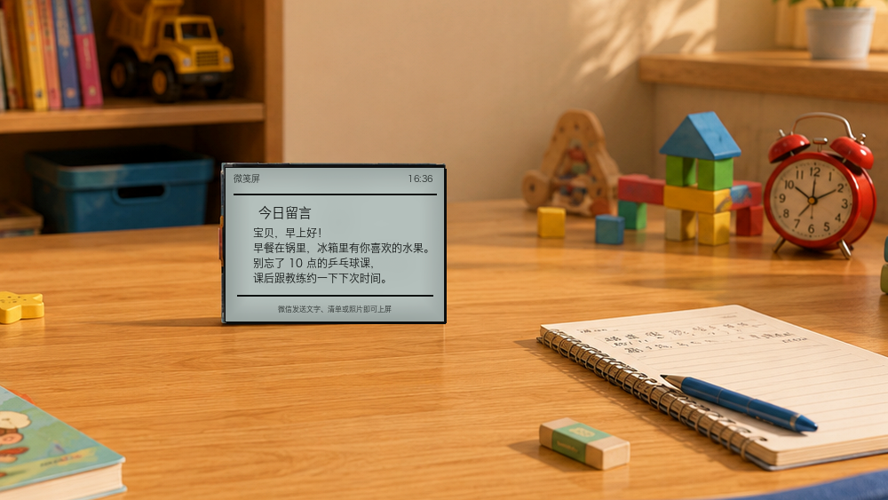

微信与 Agent 都能接管的桌面屏
普通用户扫码使用官方智能体；高级用户用六位配对码把屏幕交给自己的 OpenClaw、Hermes、Codex 或脚本。
This repository publishes the auditable ESP32 firmware, Web Serial installer, behavior contract, and Agent plugins for WeClawBot.

官方微信模式
屏幕显示微信二维码。扫码后发送文字、清单、提醒或照片，由官方智能体整理并通过 MQTT/WSS 回到真机。
自定义智能体模式
配置页切到“自定义智能体”，屏幕显示六位配对码。用户自己的 Agent 安装 weclawbotctl 后接管屏幕。
隐私可审计
固件保管微信登录、Wi-Fi、本地内容和硬件状态；公开仓库不包含官方云端密钥、用户日志或私有部署脚本。
公开固件的行为边界由 web/firmware-contract.json 描述，官网仿真机和 release 流程都应以它为准。